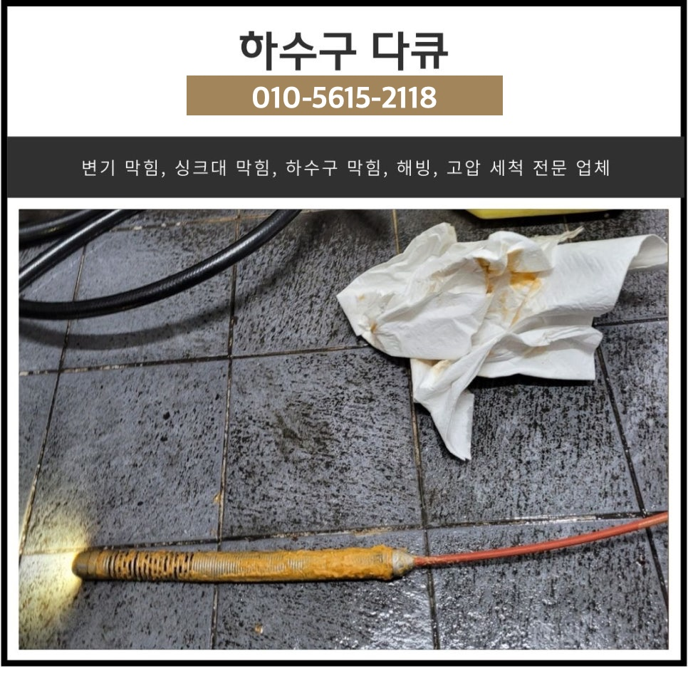
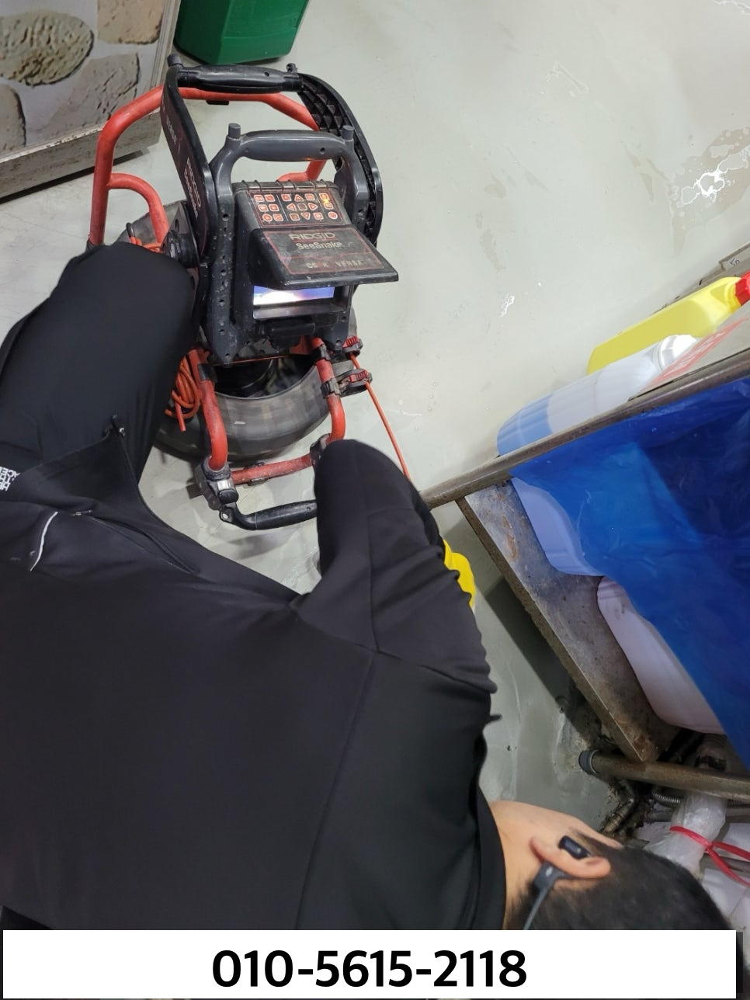
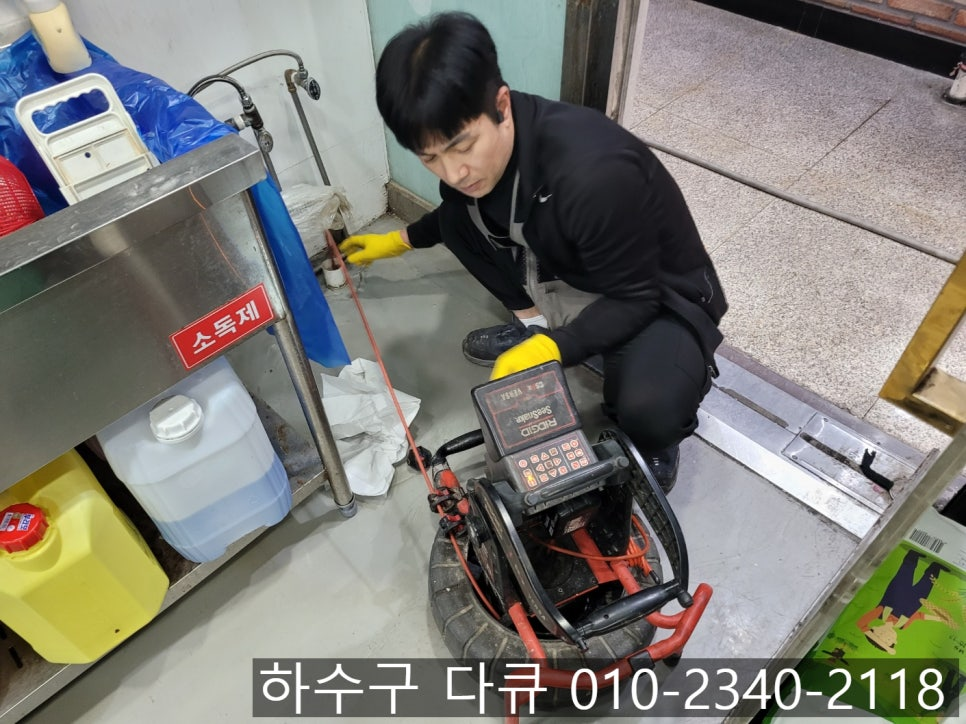
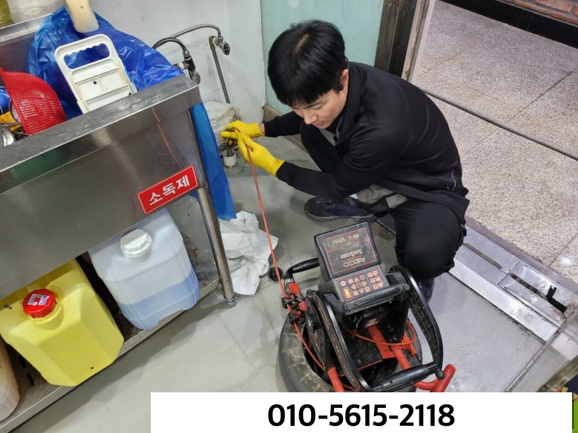
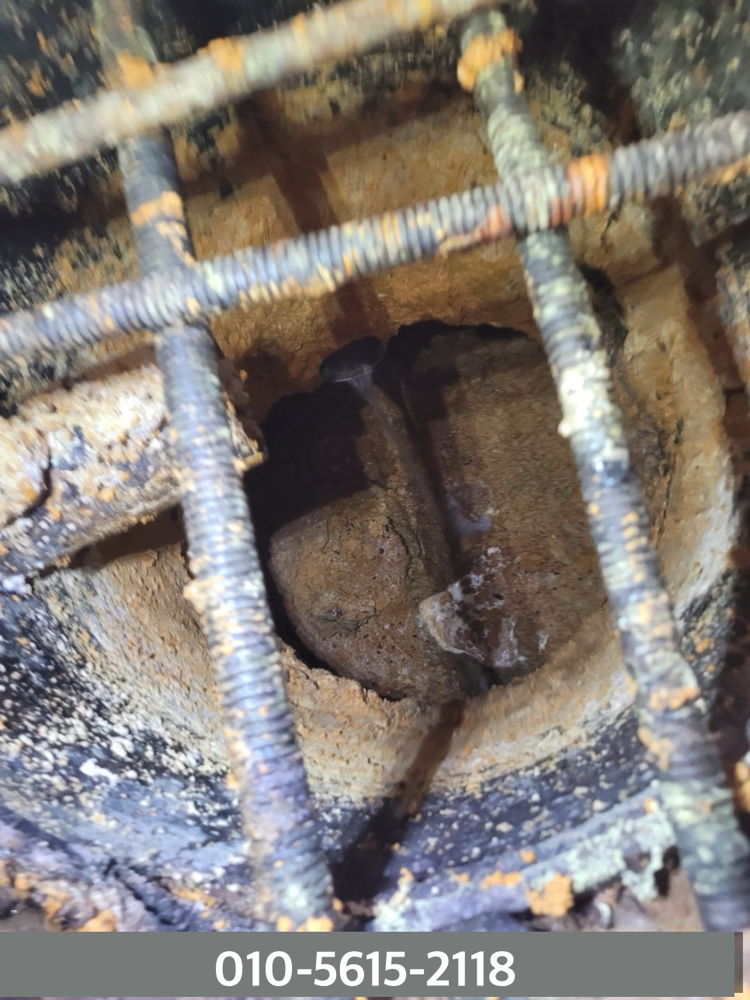
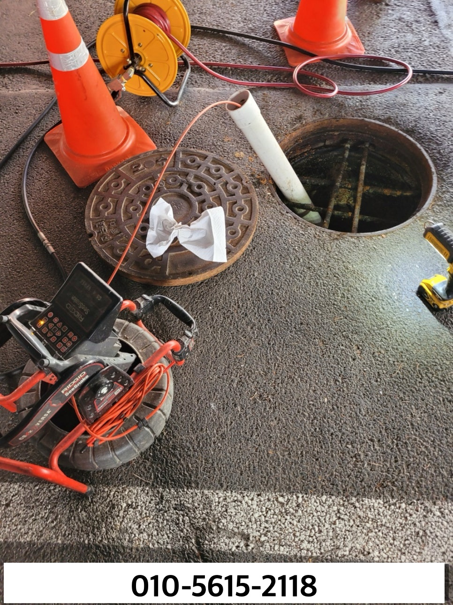
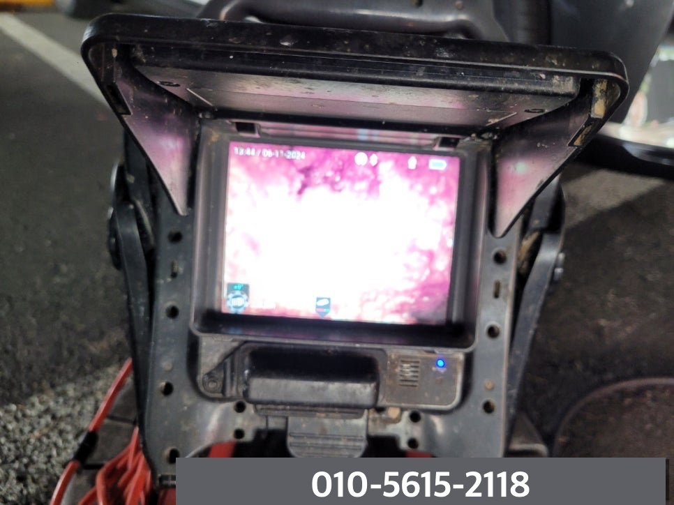

🏠 이천 신둔면 하수구 막힘 율현동 식당 주방 바닥 역류 뚫는 업체
오산시 가수동 배관막힘 전문 시공 후기

📋 작업 개요
- 위치: 오산시 가수동
- 서비스 유형: 배관막힘, 고압세척, 내시경점검
- 작업 일시:
- 업체명: 하수구수사대 (010-5615-2118)
🔍 문제 상황
안녕하세요.
신둔면 하수구 막힘, 율현동 식당 주방 바닥 역류 뚫는 업체 하수구 다큐입니다.
하수구 다큐가 이천 신둔면 하수구 막힘으로 다녀온 현장은 식당입니다.
이천 신둔면 하수구 막힘이 발생하자 당황하신 고객님께서 최대한 빨리 방문해서 해결해 줄 수 있는지 연락을 주셨어요.
다행히 작업을 마치고 귀가하던 중이라 차를 돌려 바로 현장에 방문해드릴 수 있었습니다.
율현동 식당 주방 바닥 역류가 발생하게 되면 주방에서 음식을 조리하거나 그릇을 세척하기 어려워지면서 손님을 받을 수 없어 매출 하락으로 이어질 수 있다 보니 빠르게 원인을 파악하기 위해 주방으로 들어가 내시경 카메라를 이용해 배관 검수부터 진행했습니다.
율현동 식당 주방 바닥 역류 현장은 점심에는 직장인을 대상으로 점심 식사도 제공하고 있는 정육 식당이었는데요.

🔎 원인 분석
💡 전문가 진단: 정밀 진단 장비를 사용하여 슬러지의 고착 여부를 판명하고 타격/세척 작업을 실시했습니다.
주방을 들어서자 고객님의 성격을 알 수 있을 정도로 깔끔하게 관리되어 있었습니다.
하지만 내시경으로 검수해 본 배관의 내부는 조금 달랐어요.
식당의 주방은 사람이 직접 깨끗하게 청소를 할 수 있지만 눈으로 보이지도 않고, 사람의 손이 닿지 않는 배관 내부는 기름 슬러지로 가득 차 있어 내시경 카메라 진입도 쉽지 않았습니다.
내시경 카메라를 진입시키는데 하수구 막힌 게 손으로 느껴질 정도였어요.
배관의 구배도 좋지 않은 터라 외부에 연결되어 있는 반대쪽 배관에서 다시 점검해 보기로 했습니다.
건물 밖으로 나가 뚜껑을 열어보니 예상했던 대로 문제가 심각해 보였어요.
하수구 다큐가 항상 구비하고 다니는 파이프를 배관으로 연결해 길을 만들어준 다음 내시경 카메라를 진입시켜 내부를 다시 한번 점검해 봤습니다.

🔧 작업 과정
정육 식당이라 어느 정도 예상은 했지만 정말 많은 양의 기름 슬러지가 배관을 가득 메우고 있는 상태였어요.
배관의 구배도 좋지 않고, 배관의 길이도 길고, 이물질의 양도 많다 보니 고객님께 상황을 설명해 드리고 고압세척 작업을 하기로 했습니다.
고압세척은 차량에 설치되어 있는 물탱크에 많은 양의 물을 채운 다음 짧은 시간 동안 강한 압력의 물을 분사해 주면서 배관에 붙어있는 이물질을 제거하는 장비에요.
물론 플렉스 샤프트 장비처럼 짧은 구간에서 고압세척 못지않은 효과를 내는 장비도 있지만, 배관의 크기가 크고, 긴 현장의 경우 여전히 고압세척만이 유일한 해결책입니다.
하지만 이렇게 강한 물줄기를 이용해 배관 청소를 진행해도 한 번에 해결되지는 않습니다.
내시경 카메라를 함께 이용해 이물질의 위치를 파악하고, 고압세척 장비로 청소하는 작업을 반복적으로 진행해 오랜 시간 쌓여있던 이물질을 제거해 줘야 합니다.
배관 내부에 진입했던 노즐을 점검하는 과정에서 촬영한 사진인데요.
배관 내부의 상황을 보여주기라도 하듯이 기름 슬러지가 잔뜩 묻어 나옵니다.
고압세척 장비는 높은 압력의 물을 쏟아내다 보니 노즐이 제멋대로 움직일 수 있어 작업자가 컨트롤을 잘 해줘야 합니다.
하수구 다큐는 다양한 현장 경험을 바탕으로 쌓인 노하우를 이용해 배관에 손상 없이 쌓여있는 이물질을 깔끔하게 제거해 드리고 있어요.
수차례 작업을 반복해서 진행하자 믿기 어려울 정도로 깨끗해진 배관의 내부를 확인할 수 있었습니다.
마지막으로 주방에서 물을 사용해도 역류나 막힘이 발생하지 않는지 고객님께서 보는 앞에서 테스트를 진행하고 아무런 문제가 없는 것까지 확인한 뒤 작업을 마무리할 수 있었습니다.


✅ 작업 완료
하수구 다큐는 어떤 현장이던 정확한 원인을 찾아 포기하지 않고 문제를 해결해 드리고 있습니다.
지금 하수구 막힘으로 불편을 겪고 계신다면 고민하지 마시고 연락 주세요.
경기도 오산시 오산로160번길 15 201-L16호




⚠️ 하수구 배관 막힘 예방 및 관리 가이드
- ✅ 머리카락, 비닐, 물티슈 등 물에 분해되지 않는 이물질은 절대 흘려보내지 마세요.
- ✅ 기름기 많은 식기는 설거지 전 키친타올로 먼저 기름때를 닦아내세요.
- ✅ 주기적으로 배수구에 뜨거운 물을 가득 부어주어 유지방 고착을 방지하세요.
- ✅ 작업 후 1년 이내 재발 시 무상 A/S 보증 서비스를 제공합니다.
💡 핵심 정리
- 확실한 장비 작업(내시경 점검 및 샤프트 스케일링)으로 원인을 뿌리 뽑습니다.
- 작업 후 1년 이내에 동일한 부위 재발 시 100% 무상 A/S 서비스를 보장합니다.
- 서울 · 경기 · 인천 전 지역에 24시간 언제든 긴급 출동할 수 있도록 항시 대기 중입니다.
❓ 자주 묻는 질문 (FAQ)
🚨 오산시 가수동 배관막힘 문제로 고민이신가요?
정확한 원인 진단과 확실한 시공으로 재발 없는 해결을 약속드립니다.
24시간 긴급 출동 | 서울 · 경기 · 인천 전지역 | 1년 내 재발 시 무상 A/S